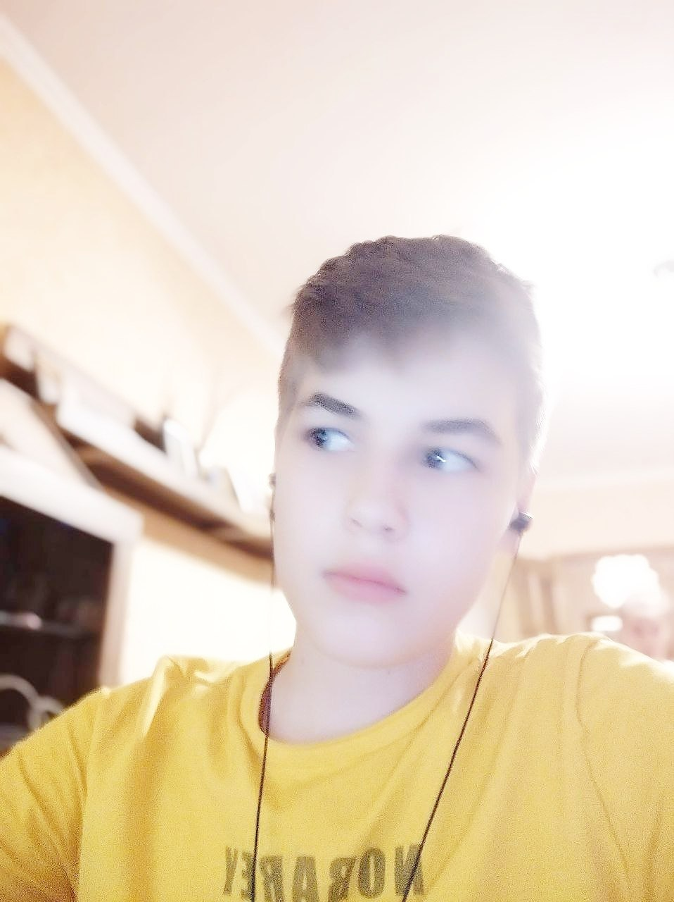

Информация об авторе
Заботкин Данила Викторович
ЭФБО-17-24
Обо мне: Я родился в 2007, в Москве. С детства сразу было видно что я Cигма. Был предводителем субкультуры Cигм с 2007 по 2024. После этого свершилась моя капитуляция, и я решил стать фурри в МИРЭА.
Навык 1: Быть сигмой
Навык 2: Использовать навык 1
Навык 3: Играть на гитаре кузнечика
Навык 4: Быть !Полезным
Мой опыт работы:
Опыт 1
Безработный
Безработный